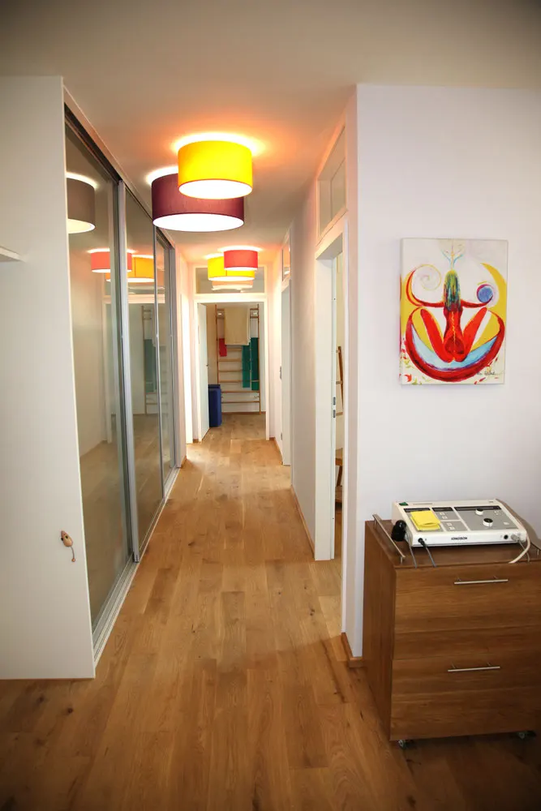

Physiotherapie · Osteopathie · Chiropraktik
Physiotherapie und Osteopathie in Winterbach, Hand in Hand
Vier Fachbereiche in einer Praxis am Oberdorf, abgestimmt auf Sie und Ihre Beschwerden.

Therapiezeiten
- Rezept online einreichen
- Heilpraktik auch ohne Rezept
- 07181 9907607
Leistungen
Vier Fachbereiche, eine Praxis
Physiotherapie
Behandlung nach ärztlicher Verordnung, auch mit Dry Needling bei Triggerpunkten und Schmerzsyndromen.
Heilpraktik und Osteopathie
50 Minuten für chronische oder komplexe Beschwerden. Wir kombinieren Osteopathie, Chiropraktik, Faszientherapie und mehr.
Ohne RezeptStress Release
Vegetative Behandlung bei Anspannung, Schlafproblemen oder Erschöpfung durch Stress.
Ohne RezeptGanzheitliche Chiropraktik
Wir lösen Störungen an der Wirbelsäule, z. B. bei Rücken-, Nacken- oder Kopfschmerzen.
Neu bei uns?
So kommen Sie zum ersten Termin
-
Formulare ausfüllen
Den Bogen für Ihren Bereich vorab zu Hause ausfüllen und mitbringen.
-
Rezept schicken
Foto oder PDF vom Rezept oder Befund genügt, auch außerhalb der Rezeptionszeiten. Heilpraktik braucht kein Rezept.
Zum Formular -
Termin bekommen
Wir melden uns zurück. Ist die Rezeption nicht besetzt, rufen wir schnellstmöglich zurück.
Telefonzeiten ansehen
Unsere Praxis
Eichenboden, freigelegtes Fachwerk, helle Räume
Wir verstehen uns als ganzheitliche, interdisziplinäre Therapiepraxis: Physiotherapie, Osteopathie, ganzheitliche Chiropraktik und Trainingstherapie gehen Hand in Hand. Unsere Stärke ist es, alle Fachbereiche eng zu verknüpfen und gegenseitig zu ergänzen. Das eröffnet eine neue Perspektive der Therapie.
Das Wartezimmer liegt zwischen alten Fachwerkbalken, die Behandlungsräume haben große Holzfenster, dazu kommt ein eigener Trainingsbereich.
Mehr Einblicke in die Praxis


Kontakt
Oberdorf 4, gegenüber der Michaels Apotheke
Therapiezeiten
| Mo | 10–13 · 14–20 Uhr |
| Di | 8–13 Uhr |
| Mi | 8–13 · 14–20 Uhr |
| Do | 8–13 · 14–20 Uhr |
| Fr | 9–13 Uhr |
| Sa, So | geschlossen |
Änderungen vorbehalten.
Termin oder Rezept
Am einfachsten über das Anfrageformular, auch außerhalb der Rezeptionszeiten. Oder rufen Sie an: 07181 9907607.